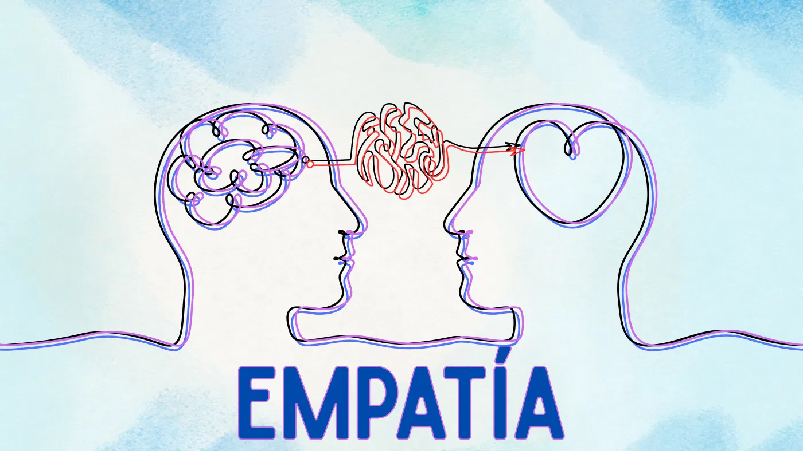
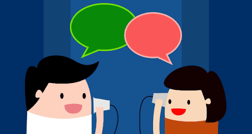
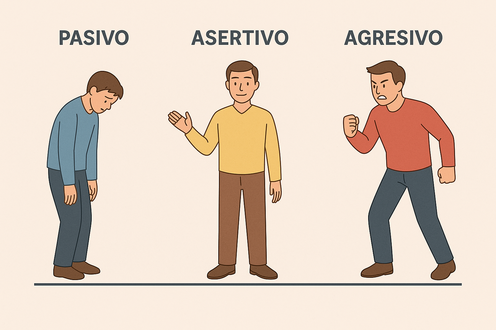
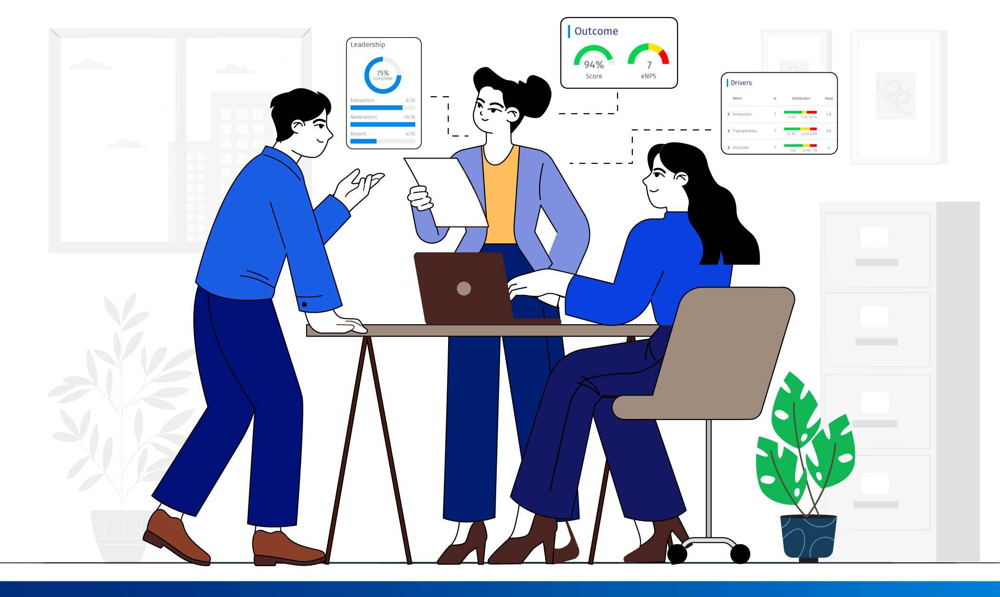

Jhonny Antonio
Las comunicaciones son una parte de nuestra integridad como seres humanos en todas ocasiones la utilizamos ya sea por habla por señas o gestos no solo esto hay otros como un simple toque Esto va con la manera en que nos expresamos o dirigimos la palabra hacia los otros utilizando algunas partes como la empatía ponerse en los zapatos de la otra persona y entenderla, También esto incluye como nuestro cuerpo se mueve, saludo , la forma , como hablamos por teléfono o cuando se tiene atracción por una persona ya que en ocasiones utilizamos nuestro cuerpo para enviar señales esto va más con las mujeres. Las comunicaciones son tan importantes para la vida nuestra desde que nacemos hasta el final de la vida ya que todos tenemos la misma comunicación, pero de distintas maneras, pero se deben tener buen vocabulario respetuoso hacia el otro y los demás.

Juan Esteban
La comunicación asertiva se puede expresar de varias formas para expresar ya sea los sentimientos, las ideas, de una manera no tan agresiva si no de una forma más pasiva siendo de una manera más respetuosa. La comunicación asertiva tiene unas ventajas las cuales serían, las que te ayudan a mejorar la autoestima, mejoras en el ambiente de trabajo, te puede reducir el estrés, entre otras. esto lo que hace es que tu puede hacer respectar tus opiniones de maneras pasivas con los demas asi sea por señas, palabras o gestos, en fin, las comunicaciones son fundamentales para la vida asi no sepamos lo que son o de la manera que la expresamos, pero ella siempre nos va estar acompañando.

Samuel Esteban
La comunicación asertiva es la ciencia de escuchar y ser escuchado de tal manera que ambos contribuyentes tanto el receptor como el emisor puedan empatizar y concientizarse de los sentimientos que genera lo que se está comunicando en el otro.
Empatia
La empatía es ser respetuoso con el otro escuchar y ser escuchado en tender, la situación en que esta persona vive tal vez no es fácil como parece. En pocas palabras es ponerse en los zapatos de esa persona en tender su punto de vista llegando a un acuerdo de respecto para ambos. Y tomar la comunicación clara y concisa dejar en claro lo que ambos quieren decir o espresar a los de mas.
Caracteristicas
.jpeg)
Persona Asertiva
Las cosas que impiden a la gente ser asertivos tienden a tener varios obstáculos los cueles son:
1. El miedo: Un temor que tiende a tener la persona a que pueda ser rechazado o que pueda generar un
conflicto.
2. Baja Autoestima: Este es cuando la persona se siente valorado, esto hace que no pueda defender
sus
derechos o expresar bien una idea.
3. Ansiedad o Estrés: Esto hace que la persona no tenga la capacidad de comunicarse de una manera
efectiva y asertiva.

Ser Pasivo
El positivismo de una persona con lleva a un estado más allá de su forma de pensar esto implica un desarrollo en su carácter de forma pasiva y calculadora. Una persona positiva está dispuesta a experimentar nuevos campos como actividades matutinas de la vida diaria como el trabajo y relacionarse con los de mas. En resumen, ser positivo facilita la forma del pensamiento ya que no se limita en su forma de expresar y es más fácil relacionarse con los de más ya que se genera confianza del uno al otro. Esto también Y Agrega Con fianza en uno mismo esto procede al socialistamente de ideas creativas y novadoras.
Ser Agresivo
Una persona agresiva implica varios factores como su actitud ya que varía su forma de pensamiento y rección. En lo común es un efecto que cada ser humano tiene otros saben cómo controlarse mentalmente y desarrollar de forma respetuosa la manera de solucionar el conflicto de forma pasiva sin llegar a la violencia. El otro modo de agresividad se da cuando la persona se deja llevar por sus emociones sea que agreda verbal, psicológica, o física En resume una persona agresiva es por el manejo de emociones no controladas esto indica diferentes factores de reacción distintas
Retroalimentación
Es un proceso que va generando un crecimiento y una mejora, consistiendo en recibir información o
comentarios sobre las acciones o dando una mejora en el desempeño. Para poder fortalecer y al mismo
tiempo dar un a juste a unas acciones futuras para así lograr unos resultados.
Esto también ayuda al aprendizaje dando un desarrollo tanto lo persona como lo laboral dando un
alcance a nuestros objetivos de una manera más fácil, ya que si aprendemos a escuchar y recibir de
una manera más eficaz podremos corregir esos errores.
La importancia de la retroalimentación es que nos genera una mejora en el desempeño, nos ayuda a
fomentar el aprendizaje, nos incrementa la motivación, nos ayuda a mejorarla comunicación, genera un
crecimiento en lo personal y en lo laboral y nos colabora en la toma de decisiones.

Escucha Activa
La escucha activa es una habilidad de comunicación en cual sirve para prestar atención de una manera consciente para poder comprender lo que la persona esta tratando de decir, esto incluye los gestos, las emociones, y pensamientos.